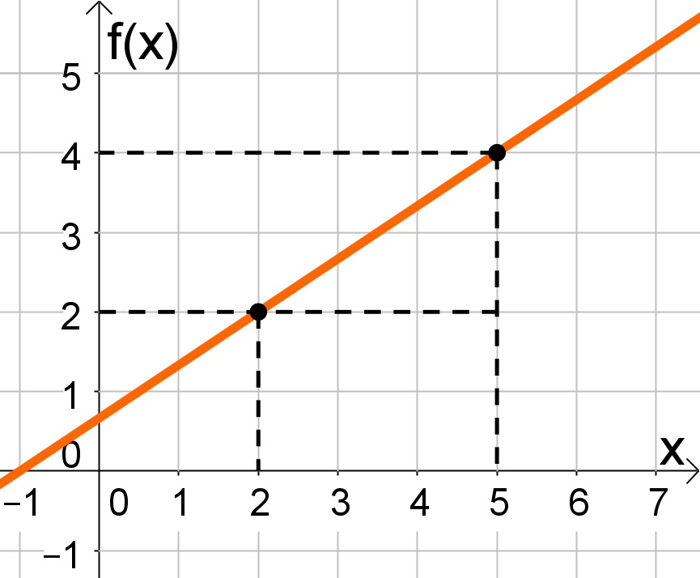

O que é a função afim?
Função afim é uma relação entre números reais que pode ser descrita na forma "f(x) = ax + b"
O gráfico de uma função afim pode ser desenhado como uma reta, como pode ser visto na figura a seguir:

Conceitos importantes
Coeficiente angular
O coeficiente angular representa a inclinação da reta e é determinado pelo valor de a. Se a > 0, a reta cresce. Se a < 0, a reta decresce.
Coeficiente linear
O coeficiente linear indica o ponto onde a função intercepta o eixo y, e é dado por b.
Raiz da função afim
A raiz de uma função é o ponto no qual f(x) = 0, e, na função afim, pode ser encontrado igualando f(x) a 0 e resolvendo a equação.